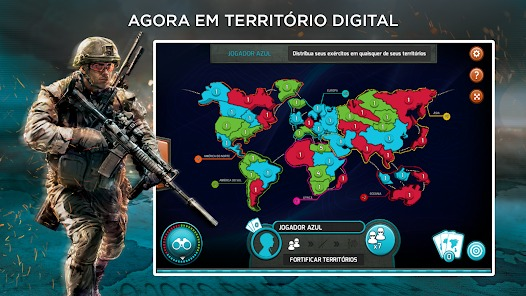

Atividade favorita de Geografia


A atividade do war foi minha atividade favorita pois alem da dinâmica dela ser divertida, a aula tinha como fundamento básico nos ensinar sobre teoria do Heartland, esse jogo também ajudou a gente a pensar melhor e destribuir mais táticas.